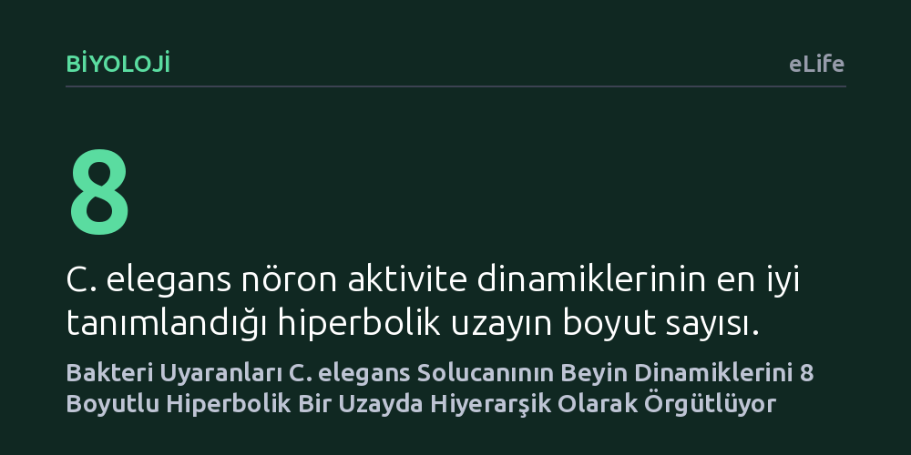

BIYOLOJI · eLife · 2026-10-16
Araştırmacılar, C. elegans solucanının burun bölgesine verilen bakteri uyaranlarının tüm-beyin nöron ağında nasıl işlendiğini ve bu aktivitenin geometrisini inceledi. Duyusal nöronların saniyeler içinde, motor nöronların ise onlarca saniye sonra tepe tepki verdiği ve nöron dinamiklerinin 8 boyutlu hiperbolik uzayda hiyerarşik örgütlendiği bulundu.
Karmaşık beyin aktivitelerinin düz Öklid geometrisi yerine ağaçsı hiyerarşiyi yansıtan hiperbolik bir uzayda çok daha yalın ve düzenli modellenebileceğini gösteriyor.

Beyin hücreleri çevredeki değişimlere tek başlarına değil, birbirine bağlı devasa ağlar halinde kolektif tepkiler verir. Bir canlının burnuna ulaşan besin kokusu ya da kimyasal bir sinyal, tek bir nöronun ateşlenmesinden çok daha fazlasını tetikler; beynin geneline yayılan eşzamanlı dalgalanmalar oluşturur. Ancak sinirbilimciler uzun süredir şu temel bilmeceyle karşı karşıyaydı: Bu kolektif nöron faaliyeti rastgele bir karmaşa mıdır, yoksa belirli bir matematiksel uzayda belirli kurallara göre mi hareket eder?
Sinir hücresi popülasyonlarının oluşturduğu bu çok boyutlu dinamiklerin geometrisini ve boyutunu çözmek, beynin duyusal girdileri eyleme dönüştürme mantığını anlamak için kritik önem taşıyor. Geleneksel yaklaşımlar nöron aktivitelerini genellikle düz, aşina olduğumuz Öklid geometrisiyle açıklamaya çalışıyordu. Oysa karmaşık ağaçsı ve hiyerarşik yapıların Öklid uzayına sığdırılması ciddi bilgi kaybına yol açabiliyor.
Araştırmacılar bu soruyu yanıtlamak için sinirbilimin en temel model organizmalarından biri olan şeffaf nematod solucanı Caenorhabditis elegans'ı mercek altına aldı. Toplamda sadece birkaç yüz nöronu bulunan bu canlı, tüm sinir ağının bağlantı haritası (konektom) eksiksiz çıkarılmış ender canlılardandır. Deneyde, solucanın burun ucuna besin kaynağı olan bakteri uyaranları ile kontrol tampon sıvıları kontrollü biçimde verildi.
Bu sırada solucanın kafa bölgesinde yer alan nöronların büyük bir kısmının aktivitesi eşzamanlı olarak kaydedildi. Kaydedilen aktif nöronlar işlevsel özelliklerine göre altı farklı kümeye ayrıldı. Bunların ikisi uyarana açılıp kapanma tepkisi veren duyusal kümeler (ON ve OFF), dördü ise solucanın hareketini yönlendiren motor ve komuta nöron kümeleriydi (AVA, RME, SMDD ve SMDV). Elde edilen zengin veri seti, hem zamansal gecikmeler hem de manifold geometrisi açısından kapsamlı matematiksel analizlere tabi tutuldu.
Çalışmanın ilk çarpıcı bulgusu, bilginin akışındaki zamansal ayrışmaydı. Koku uyarısını ilk karşılayan duyusal nöronlar en yüksek tepkilerine ilk 15 saniye içinde ulaştı. Buna karşılık, solucanın yönelimini ve hareketini belirleyen komuta ve motor nöron kümelerinin tepe tepki seviyelerine ulaşması onlarca saniye sürdü. Bu durum, duyusal bilginin doğrudan bir refleks gibi anında motora aktarılmadığını, ağ içerisinde aşamalı olarak işlendiğini gösterdi.
Daha da önemlisi, nöron popülasyonunun oluşturduğu dinamiklerin geometrisi incelendiğinde ortaya çıktı. Veriler, düz Öklid uzayı yerine negatif eğrilikli hiperbolik bir uzay tarafından çok daha başarılı şekilde tarif ediliyordu. Nöronların kolektif aktivitesi tam 8 boyutlu bir hiperbolik alana yerleşiyordu. Bu 8 boyutun biri duyusal yönelime (ON ve OFF nöronları), ikisi temel motor yönelimlerine (ileri-geri ve sırt-karın hareketleri) ayrılmışken, kalan boyutlar henüz sınıflandırılmamış diğer nöronların koordinasyonuna denk geliyordu.
Hiperbolik uzayın en belirgin özelliği, ağaç dallanması gibi katmanlı ve hiyerarşik yapıları basıklaşmadan, en doğal biçimde barındırabilmesidir. C. elegans nöronlarının hiperbolik bir uzayda kümelenmesi, canlının sinir sisteminde bilginin sıkı bir hiyerarşiyle işlendiğinin doğrudan matematiksel kanıtıdır. Duyusal girdiden motor komutuna uzanan yol, piramitsel bir soyutlama basamağını takip etmektedir.
Bu sonuçlar, sadece basit bir solucanın besin arama davranışını açıklamakla kalmıyor; daha karmaşık omurgalı beyinlerindeki büyük nöron topluluklarının nasıl modellenebileceğine dair de güçlü bir analitik çerçeve sunuyor. Düşük boyutlu hiperbolik modeller, yapay sinir ağlarından biyolojik beyin haritalamaya kadar hesaplamalı sinirbilimde geniş yankı uyandıracak nitelikte.